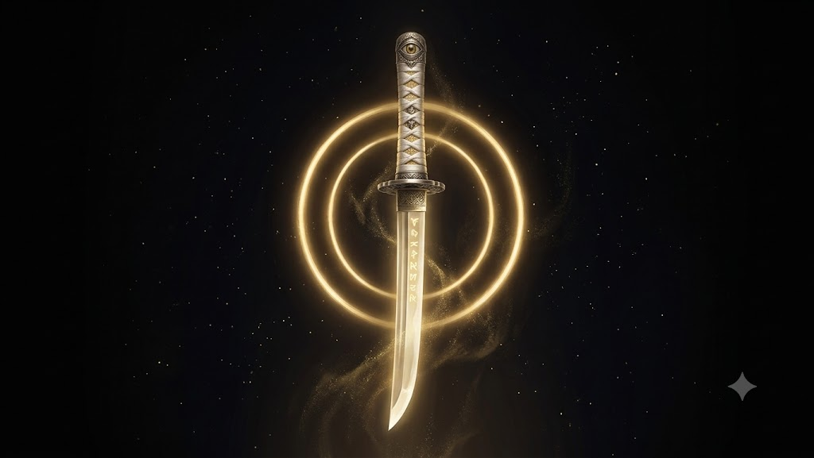
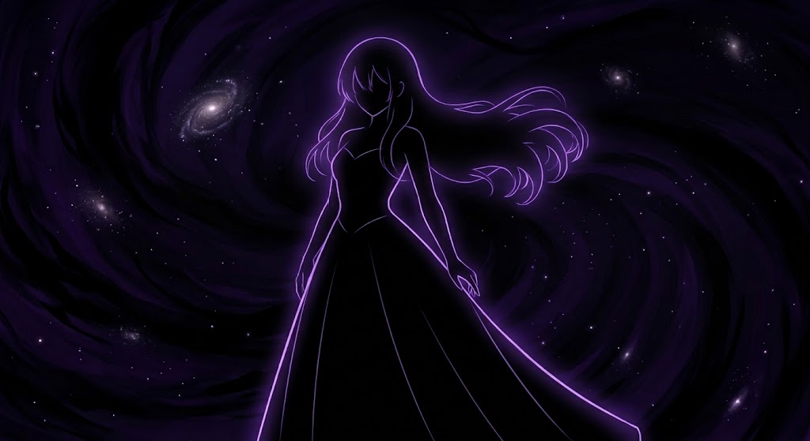

The Vision That Started It All
Footage recovered from the burning estate — the night the veil was torn.
The Radiant Mother

Throughout Hinomoto, the Radiant Mother is worshipped as the source of all divine light. Shrines burn incense at her altars. Champions kneel before her priests to receive her blessing before battle. Mothers whisper her name over sleeping children. Her symbol — a golden halo encircling a single eye — is stitched into banners from Owari to Ise.
But the truth is far older than the faith. The Radiant Mother is not a goddess. She is a celestial parasite — a vast, hungering consciousness that drifted into Hinomoto's sky in an age before memory. She does not grant blessings out of love. She grants them to fatten.
The Blade of the Radiant Mother. Given only to her champions. Taken back only when they are ripe.
How the Harvest Works
When a champion accepts the Radiant Mother's blessing, a fragment of her light is planted in their soul. Every enemy they slay, every essence they claim, every level they gain — all of it is tithed upward. The champion believes they are growing stronger. In truth, they are being marinated.
When the soul reaches its peak — ripe, glowing, saturated with stolen power — the Radiant Mother comes to collect. The champion does not ascend. They are consumed. Their name is erased from every record. Their family is told they were "called home to the light."
Why No One Knows
- Her priests are the only ones permitted to witness the harvest — and they are fed first.
- Survivors who speak are branded heretics and burned at her shrines.
- The harvest leaves no corpse — only a faint ring of gold ash where the champion stood.
- Those who refuse her blessing are declared faithless and hunted by her chosen.
The Hollow Princess

There was a sky before her. There was a goddess before her. No one remembers the name, because the Radiant Mother did not merely replace the old faith — she erased it. The oldest shrines in Hinomoto are built over foundations no priest will speak of. The oldest prayers were written in a hand no one can read. Something was here first.
Her name was Utsuhime — the Hollow Princess. She was the daughter of the first sky, the goddess who shaped the four domains and taught the earliest people to bury their dead. She was not a warrior. She was not a tyrant. She was a scavenger, and she fed the way the world fed — slowly, patiently, on the natural dying of her people. She took what the world gave her and never once reached for more.
Utsuhime, the Hollow Princess. Daughter of the first sky. The goddess the world forgot.
She was weak because of it. She was content with a trickle. She was happy with the slow rhythm of mortals living and dying on their own terms. And then the Radiant Mother arrived, and she discovered what ambition looked like.
How The Radiant Mother Took Her Throne
The Radiant Mother did not fight Utsuhime. She did not need to. She arrived, she observed, and she realized that the older goddess had built a system that could be exploited.
Utsuhime waited for wars. The Radiant Mother realized she could cause them. Utsuhime waited for plagues. The Radiant Mother realized she could spread them. Utsuhime relied on the natural dying of her worshippers. The Radiant Mother realized she could manufacture the dying.
Within a few centuries, her influence grew faster than the old goddess could keep up with. By the time Utsuhime realized what was happening, her worshippers had already begun praying to a new name. Her shrines had been rebuilt around a new symbol. Her story had been forgotten, replaced by a lie that sounded gentler.
And then the Radiant Mother reached into Utsuhime's very essence — and devoured her. Not wholly. Not cleanly. But enough that the older goddess was reduced to a whisper, a fragment, a husk of what she had been. She has not spoken to a mortal in ten thousand years.
Where She Is Now
Utsuhime does not exist as a goddess anymore. She exists as a fracture — a thousand-year-old crack in the celestial order that the Radiant Mother did not bother to close. She lives in the ruins of the old shrines. She lives in the soil of forgotten battlefields. She lives wherever the world remembers something that the Radiant Mother has erased.
And now — for the first time in a thousand years — she has a voice again.
When the Radiant Mother cursed you with The Inverse, she opened a door she did not mean to open. She opened a crack in her own system — a place where Utsuhime could reach through. Every soul the Radiant Mother has cursed before you was consumed or scattered before the crack could be used. You are the first one to survive. You are the first time the old goddess could interfere.
The Inverse is not a curse. It is a door. And the Hollow Princess has been walking through it ever since.
What She Wants
Utsuhime does not want to save you. She wants to save herself. She is tired of being a whisper. She is tired of watching the Radiant Mother grow fat on a world she was never meant to hold. She wants her sky back. She wants her rhythm back. She wants the world to die on its own terms again.
She is not good. She fed on Hinomoto for ten thousand years. She took every soul that passed out of the world and into her dark. She is a predator — just a slow one. But she is a predator who waited. And in a world where the other predator has already eaten everything she loved, patience might be the only virtue left.
The Road to Owari
The story of Chronicles of Hinomoto unfolds across five chapters — one long road from the ashes of the estate to the shrine of the Radiant Mother at Owari. Each chapter is a different leg of the hunt. Each one takes you further from the person you were.
The Inverse
Every soul has a weight. The Radiant Mother has harvested for millennia, and in all that time, she has only ever rejected one kind of soul: the frail.
A soul too weak to fatten, too thin to harvest, too dim to season. When such a soul is offered to her — as yours was, on the night your estate burned — she does not simply pass it by. She recoils. And in recoiling, she curses it.
What the Curse Does
The curse is called The Inverse. It inverts the fundamental math of the soul:
- Leveling: Instead of gaining positive stats, your attributes invert into negative values.
- Essence: You cannot tithe upward — so you absorb downward, pulling energy from every enemy you slay.
- Divine Metal: Blessed steel — the Radiant Mother's own weapon — rots in your presence.
- Hierarchy: The celestial order cannot perceive you. You are a hole in the ledger of heaven.
- Growth: Where others gain power, you gain depth. The weaker you become, the more you can hold.
What The Radiant Mother Does Not Know
She believes she created the Inverse. She believes it is her curse — a punishment for a soul unworthy of her attention. She is wrong.
The Inverse is not her curse. It is Utsuhime's gift, wearing the Radiant Mother's shape. It is a door the Hollow Princess opened the instant the goddess looked away. Every soul the Radiant Mother curses is a chance for Utsuhime to reach through. Every cursing is a door. And this time, finally, the door stayed open.
You are not the first person the Radiant Mother has cursed. You are the first successful interference by the goddess she thought she had eaten.
Why It Terrifies Her
The Radiant Mother has no defense against a soul she cannot feed. Every champion she sends against you is, in effect, a meal delivered to your door. Every blessing she pours into her chosen is essence you will eventually claim. You are not her enemy — you are her antithesis. And she knows it.
Worse: she knows there is a voice inside your head that is not hers. She cannot hear it. She cannot touch it. But she can feel it — a whisper she thought she had silenced ten thousand years ago, walking the world in a body she rejected.
The Four Domains
The realm of Hinomoto is fractured into four great domains. Each has its own relationship with the Radiant Mother — some loyal, some silent, some already half-devoured.
Owari
The eastern coast. Her oldest shrine stands here, and her priests rule in all but name.
Mikawa
The mountain spine. A stubborn people who honor the old spirits and distrust the Radiant light.
Mino
The central plains. Wealthy, fractured, and ripe — her harvest fields in all but word.
Ise
The southern isles. Silence has fallen here. No pilgrims return. No priests speak of it.
The Hunt Begins
You are the first soul in a thousand years that the Radiant Mother could not eat. You are the first to walk Hinomoto with The Inverse humming in your chest. You are the first — and perhaps the only — weapon capable of cutting the false goddess down.
But there is a voice in your head that is not yours. It has been there since the moment of your curse. It speaks in fragments. It speaks in riddles. It speaks in a language older than the Radiant Mother's name.
It is Utsuhime. She was the sky before the false mother came. She was the world before the harvest. She has been waiting ten thousand years for someone like you.
The realm is broken. The faith is a lie. The sky is hungry.
Five chapters. One road. Hunt her. Reclaim the realm. Become the void she should have feared.